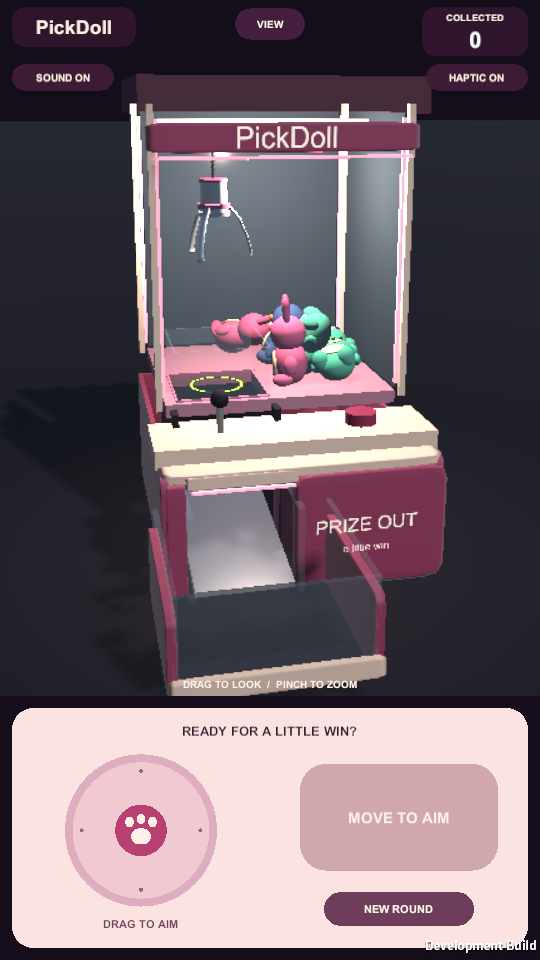
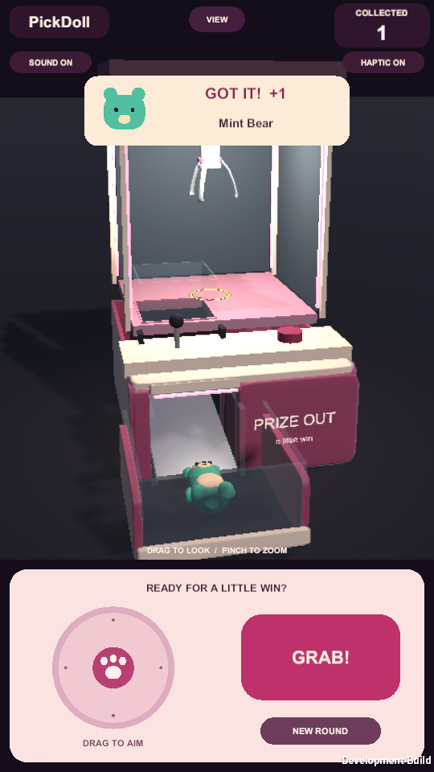
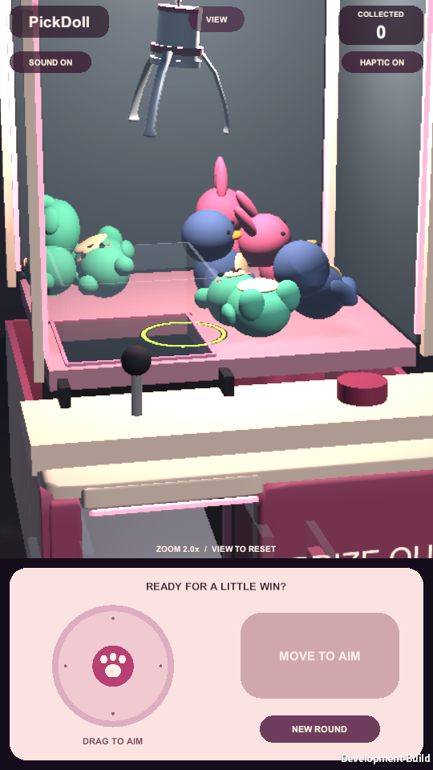
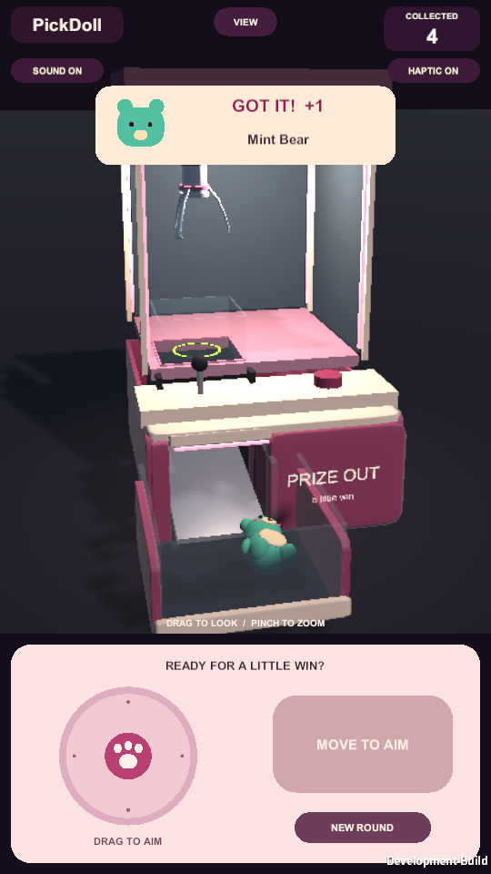
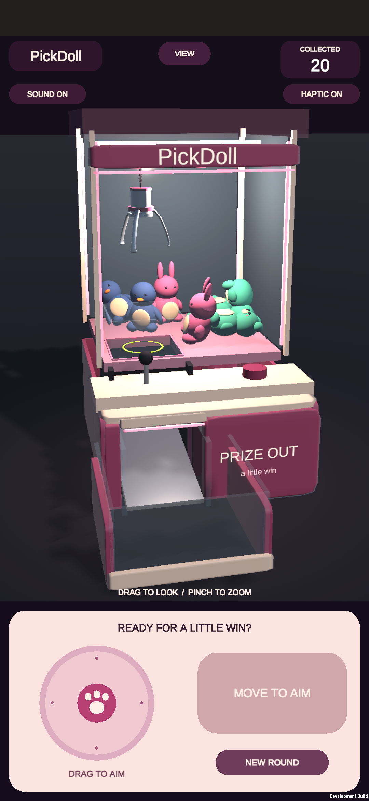
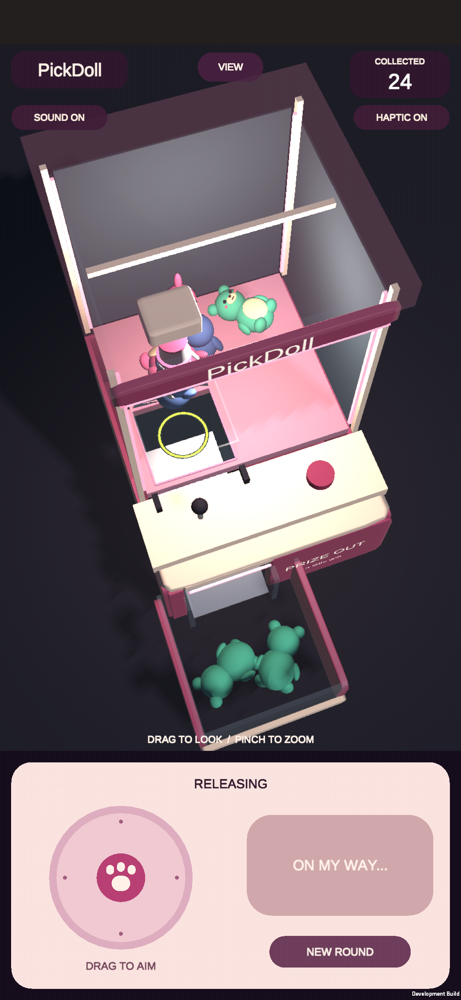

획득 피드백
저장에 성공한 새 획득에만 얼굴·이름·+1 카드를 짧게 표시한다. 카운터 확대·복원, 직접 합성한 성공 효과음, 지원 Android 기기의 짧은 진동과 LED 강조를 연결한다. 기존 기본 글꼴에 맞춰 UI 문구는 영문 GOT IT!를 사용한다.
최종 배출 후 획득 카드·카운터 반응·성공 효과음·짧은 진동, 사진을 참고한 금속 집게와 정돈된 외장을 구현한다.
저장에 성공한 새 획득에만 얼굴·이름·+1 카드를 짧게 표시한다. 카운터 확대·복원, 직접 합성한 성공 효과음, 지원 Android 기기의 짧은 진동과 LED 강조를 연결한다. 기존 기본 글꼴에 맞춰 UI 문구는 영문 GOT IT!를 사용한다.
상단의 SOUND·HAPTIC 버튼으로 각각 켜고 끈다. 설정을 저장하며, 성공 카드는 터치를 막지 않는다. 연속 획득은 차례로 표시하고 같은 영수증은 중복 연출하지 않는다.
원통형 금속 하우징·색상 링, 가는 곡선 손가락과 둥근 끝, 코일 케이블·상단 커버를 추가한다. 기존 관절·손가락 충돌체·매달림 물리는 유지한다.
핑크·크림 외장과 모서리 마감, 확산 커버 형태의 LED 라인, 내부 경사로를 가리는 전면 외장·하부 수령구 표시를 추가했다. 경사로·트레이의 물리 형상은 유지하고, 획득 판정 전면은 새 외장 전면(-0.825)에 맞춘다. 캐릭터 브랜드·사진의 로고를 게임에 복제하지 않는다.
인형은 기존 3종·7개다. 최종 천 재질·눌림 복원은 10주차, 외장·캐릭터 패널과 조명의 전체 마감은 14주차 계획을 유지한다.




에디터 설정 검사와 최종 Windows 실행 검사를 통과했다. 선 자세·누운 자세 6/6 집기·배출·집계와 획득 9건의 성공 효과 9회, 카운터 반응·터치 통과·중복 방지·설정 보존·저장 재읽기를 확인했다. 폰·폴드·탭 3비율 UI 검사도 통과했다. Android 빌드·v2 서명 검증과 S26 설치·실행, 기존 20개 영수증 보존을 확인했다. 사용자 품평에서 집계 지연·알림 같은 성공 효과·회전 반응의 아쉬움과 진동 체감 부족을 접수했다. 요청에 따라 개선은 다음 10주차로 이관한다.
PASS Feedback configured; 12 existing finger colliders retained; decoration adds no colliders Player regression required for physical delivery and feedback timing
PASS startup_joint_assembly_stable=True seven_prizes_three_species_stable=True; lying=4 new_round_home_0=True new_round_home_1=True new_round_home_2=True no_success_on_start_or_new_round=True sound_haptics_buttons_and_saved_preferences=True transparent_header_rendered_behind=True analog_drag_precision_release_ownership=True; small=0.0075; full=0.1335 joystick_excludes_camera_raycast=True empty_header_routes_camera_gestures=True pinch_1_to_2_limits_view_reset_no_yaw_jump=True direction_and_precision_buttons_removed=True safe_touch_layout_540x960=True closed_start_opens_before_descent=True exit_without_chute_not_counted=True entry_only_not_counted=True saved_acquisition_card_once=True upright_delivery=True; duplicate_probes_once=True; pos=(-0.23, 0.14, -1.12) gravity_pose_90=True; pos=(-0.15, 0.14, -1.08) gravity_pose_180=True; pos=(-0.23, 0.14, -1.02) transparent_guard_blocks_rolling=True; pos=(-0.23, 0.73, 0.06) automatic_0: acquired=True; home=True; visible_tray=True; busy_input_blocked=True; no_early_count=True; high_release=True; pos=(-0.11, 0.14, -1.10); total=4; lowest=0.957; stop=PRIZE_CONTACT; force=6.50; safe=True automatic_1: acquired=True; home=True; visible_tray=True; busy_input_blocked=True; no_early_count=True; high_release=True; pos=(-0.37, 0.14, -1.26); total=5; lowest=1.038; stop=PRIZE_CONTACT; force=11.47; safe=True automatic_2: acquired=True; home=True; visible_tray=True; busy_input_blocked=True; no_early_count=True; high_release=True; pos=(-0.27, 0.14, -1.20); total=6; lowest=0.957; stop=PRIZE_CONTACT; force=6.50; safe=True automatic_3: acquired=True; home=True; visible_tray=True; busy_input_blocked=True; no_early_count=True; high_release=True; pos=(-0.36, 0.14, -1.20); total=7; lowest=0.837; stop=STRUCTURE; force=3.27; safe=True automatic_4: acquired=True; home=True; visible_tray=True; busy_input_blocked=True; no_early_count=True; high_release=True; pos=(-0.41, 0.14, -1.14); total=8; lowest=0.837; stop=STRUCTURE; force=3.35; safe=True automatic_5: acquired=True; home=True; visible_tray=True; busy_input_blocked=True; no_early_count=True; high_release=True; pos=(-0.23, 0.14, -1.28); total=9; lowest=0.837; stop=STRUCTURE; force=3.27; safe=True empty_cycle_returns_without_acquisition=True new_round_preserves_session_count=True; events=9; total=9 large_counter_matches_receipts=True grab_over_hole_blocked=True reload_preserves_total_and_species=True all_receipts_one_feedback_each_no_replay=True; accepted=9; events=9
지정 조준·일반 그립 조건의 회귀 검사이며 실제 플레이 승률을 뜻하지 않는다. 장식용 충돌체는 추가하지 않았고, 수령구 안쪽 통로 일부는 보인다. 외장 전체의 최종 마감은 14주차 계획이다. 효과음 청취와 진동의 실제 감각은 실기기 품평에서 확인한다.
PASS startup_joint_assembly_stable=True seven_prizes_three_species_stable=True; lying=2 new_round_home_0=True new_round_home_1=True new_round_home_2=True no_success_on_start_or_new_round=True sound_haptics_buttons_and_saved_preferences=True transparent_header_rendered_behind=True analog_drag_precision_release_ownership=True; small=0.0077; full=0.1303 joystick_excludes_camera_raycast=True empty_header_routes_camera_gestures=True pinch_1_to_2_limits_view_reset_no_yaw_jump=True direction_and_precision_buttons_removed=True safe_touch_layout_452x1158=True
PASS startup_joint_assembly_stable=True seven_prizes_three_species_stable=True; lying=4 new_round_home_0=True new_round_home_1=True new_round_home_2=True no_success_on_start_or_new_round=True sound_haptics_buttons_and_saved_preferences=True transparent_header_rendered_behind=True analog_drag_precision_release_ownership=True; small=0.0077; full=0.1335 joystick_excludes_camera_raycast=True empty_header_routes_camera_gestures=True pinch_1_to_2_limits_view_reset_no_yaw_jump=True direction_and_precision_buttons_removed=True safe_touch_layout_906x1088=True
PASS startup_joint_assembly_stable=True seven_prizes_three_species_stable=True; lying=3 new_round_home_0=True new_round_home_1=True new_round_home_2=True no_success_on_start_or_new_round=True sound_haptics_buttons_and_saved_preferences=True transparent_header_rendered_behind=True analog_drag_precision_release_ownership=True; small=0.0077; full=0.1303 joystick_excludes_camera_raycast=True empty_header_routes_camera_gestures=True pinch_1_to_2_limits_view_reset_no_yaw_jump=True direction_and_precision_buttons_removed=True safe_touch_layout_876x1400=True
Windows 화면 비율 모사이며 실제 폴드 접기·펼치기 시험과 구분한다.

0.9.0 / code 11 · ARM64 · 개발용 APK
42,317,957 bytes · v2 서명 검증 통과
Unity/Builds/Week09/Android/PickDoll-week09.apk
SHA-256a047e1b4b3a3f8809b46d9003428341e67f15ab53beea5619a435ff2ed12a8c1
설치 전후 수집 20개 → 20개. 기존 영수증 전체가 남아 있는지 비교했다. Android VIBRATE 권한이 반영·허용된 것을 확인했다.
집계가 더 굴러 나와야 반영되는 느낌, 알림 수준의 성공 효과, 매번 비슷한 갈고리 방향을 개선해 달라는 품평을 받았다. 사용자가 다음 차수에 적용하고 현재 범위로 PR을 요청했다. 설정 OFF·재실행 유지에 대한 실기기 사용자 확인은 별도 미수신 상태로 남긴다. 권한 반영과 진동의 실제 감각은 구분한다. S26 실제 플레이에서 Berry Bunny 획득 21개, Sunny Penguin 획득 22개로 증가한 배출·저장 로그를 확인했다. 해당 시점까지 진동 호출·저장 오류 로그는 관찰하지 않았다.
기존 AssetPackManager 시작 로그는 이번 버전에서도 관찰했다. 게임은 실행되며 후속 조사 항목을 유지한다.
2026년 11월 25일 제공된 흑백 토끼 사진을 기준으로 카툰 마스코트와 게임에서 뽑을 수 있는 3D 봉제인형을 10주차에 제작한다. 검은 직립 귀·눈 패치·뒤쪽 몸과 흰 중앙 얼굴·가슴·앞발, 통통한 몸을 핵심 특징으로 유지한다. 시안 품평 후 적용하며 이번 9주차 코드에는 추가하지 않는다.

2026년 11월 25일 사용자 피드백을 10주차 집계·축하 연출·관성 회전 계획에 기록했다. 최종 수령구 바닥 접촉 시 집계, 더 명확한 축하 효과와 체감 진동, 물리 입력에 따른 미세 회전을 다음 차수에 적용한다.
S26에서 획득 21–25개 시점의 진동 요청 5건이 OS 기록상 finished였으며 각 효과는 35ms였다. 권한은 허용 상태다. 물리적 체감은 확인되지 않았으므로 진동 완료로 마감하지 않고 길이·강도·패턴 보강 과제로 남긴다.